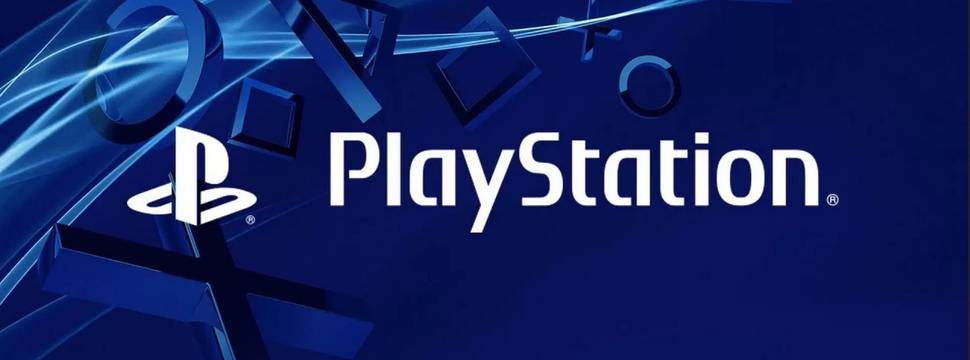

PlayStation works on service to compete with Xbox Game Pass, says Bloomberg
Subscription service is codenamed Spartacus and may be launched in the second trimester

Bloomberg website reports that Sony is working on a new service for the PlayStation that should compete directly with the Xbox Game Pass, with a subscription plan that would give access to classic PS1, PS2, PS3 and even PSP games.
Reporting sources indicate that the project, code-named Spartacus, would allow PlayStation owners to access a catalog of classic and modern games from Sony's consoles, and will merge the company's two current services, PlayStation Plus and PlayStation Now, into one. platform, removing the Now mark in the process.
Bloomberg's article doesn't confirm it, but it's likely that the service will be available on both the PlayStation 5 and PlayStation 4, as the old console has an installed base of tens of millions of players.
Although Sony's alleged plans are not finalized, documentation acquired by the report indicates three different subscription plans: the basic service would be essentially the same as the current PS Plus; the intermediate plan would feature PS4 and, in the future, PS5 games; and the third level would feature demos, game streaming and a catalog of PlayStation, PS2, PS3 and PSP classics.
The sources also indicate that the company is also focused on strengthening its strategy in the field of game streaming, as is Microsoft and its xCloud.
The service is expected to launch in the second quarter, equivalent to the North American spring.
Sought by Bloomberg, Sony did not comment on the matter.
With the success of the Xbox Game Pass, which currently has 18 million subscribers and raves from the public for its catalog and benefits, one of the big questions in the industry is what Sony's reaction and proposal would be for a similar platform.
At the launch of the PlayStation 5, Sony made available the PS Plus Collection, a collection of acclaimed PS4 games (both exclusive and cross-platform) that can be downloaded by subscribers to the service.
At the time, that offer led to speculation that PlayStation was laying the groundwork for a possible competitor to the Xbox service, something reinforced by the brand's president, Jim Ryan, in a November 2020 interview.
"There is news to come, but not today," he said in an interview with TASS. "We have PlayStation Now which is our subscription service, which is available in a number of markets."
It is worth noting that PlayStation Now is not available in several countries, including Brazil, however, Sony has not officially declared that it will make a service equivalent to the Xbox Game Pass.